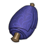

Что добавлено в мир

Значки ресурсов — дополнительные точки сверх обычного мира (589 шт., отрастают за 30 минут). Красные области — FFA-зоны: там правило уровня не защищает. Оранжевые кружки — закрытые проходы к участкам замков. Щёлкни по карте — она развернётся на весь экран.
Все места с ресурсами (33)
- 1
 Наждак ×24Бастион Клинков Яда · FFA
Наждак ×24Бастион Клинков Яда · FFA - 2Наждак ×4Бастион Клинков Яда · FFA
- 3
 Технический лом ×7Электростанция «Трансендума» · FFA
Технический лом ×7Электростанция «Трансендума» · FFA - 4Наждак ×14,
 Оскверненный дуб ×10, Уголь ×1Застава резчиков · FFA
Оскверненный дуб ×10, Уголь ×1Застава резчиков · FFA - 5
 Высокогорный лотос ×20,
Высокогорный лотос ×20,  Оскверненный цветок ×18, Чертополох ×1Застава смешения ядов
Оскверненный цветок ×18, Чертополох ×1Застава смешения ядов - 6Технический лом ×9Ливневые холмы · FFA
- 7
 Сера ×12Омут перерождения · FFA
Сера ×12Омут перерождения · FFA - 8Сера ×10Шахта «Трансендума» · FFA
- 9Технический лом ×9Громовой пик · FFA
- 10

Коконы шелкопряда (шёлк) ×30Паучья пещера · FFA - 11
 Призрачный гриб ×13Хижина ведьмы
Призрачный гриб ×13Хижина ведьмы - 12
 Кристалл призрака ×15, Призрачный гриб ×10Проклятая деревня · FFA
Кристалл призрака ×15, Призрачный гриб ×10Проклятая деревня · FFA - 13Кристалл призрака ×12Древняя деревня
- 14
 Кровавый кристалл ×9Падение Дракулы · FFA
Кровавый кристалл ×9Падение Дракулы · FFA - 15
 Серебряная руда ×12Священный серебряный рудник · FFA
Серебряная руда ×12Священный серебряный рудник · FFA - 16Серебряная руда ×11Гнездо гарпий · FFA
- 17
 Кварц ×16Кварцевый рудник
Кварц ×16Кварцевый рудник - 18
 Железная руда ×12, Кварц ×5Скальный проход
Железная руда ×12, Кварц ×5Скальный проход - 19Железная руда ×9Железная пещера · FFA
- 20Сера ×10Бастион Данли
- 21
 Скорбящая лилия ×23Ферма
Скорбящая лилия ×23Ферма - 22
 Священный виноград ×20Брайтхейвенские виноградники
Священный виноград ×20Брайтхейвенские виноградники - 23
 Сердцецвет ×23Сад замка Дракулы · FFA
Сердцецвет ×23Сад замка Дракулы · FFA - 24Священный виноград ×20Брайтхейвенские виноградники
- 25
 Подснежник ×18,
Подснежник ×18,  Огненный цветок ×18Ферма
Огненный цветок ×18Ферма - 26Железная руда ×11Проклятая железная шахта
- 27
 Адский рог ×35,
Адский рог ×35,  Кровавая роза ×29Ферма
Кровавая роза ×29Ферма - 28
 Хлопок ×33,
Хлопок ×33,  Подсолнечник ×16Ферма
Подсолнечник ×16Ферма - 29Сера ×12Крепость разбойников
- 30Сера ×12Серный карьер разбойников
- 31
 Медная руда ×5Медный карьер разбойников
Медная руда ×5Медный карьер разбойников - 32Медная руда ×5Медный рудник разбойников
- 33Медная руда ×6Медный лагерь разбойников
Матрёшка PVP
Полный V Rising с замками, рейдами по расписанию, мировым боссом, повозками с добычей и своей экономикой. Сильные не давят слабых — за этим следит правило уровня.
В списке серверов — [RU] Matryoshka PVP | 2.6 | Solo/Duo | Mod
Рейты и рейды
Рейды замков — каждый день 20:00–22:00 МСК
Кроме первых двух дней вайпа: 8 и 9 октября рейдов нет, первое окно — 10 октября в 20:00. Вне окна урон по замкам не проходит. Сердце замка разрушается только при распаде, осадные големы крепкие, их появление видно на карте.
Зашёл на участок чужой осады третьим — ты наблюдатель: невидим, урон проходит сквозь тебя, ничего трогать нельзя.
Технические настройки
- PvP всегда; новичку — короткая защита от PvP.
- Чужие сундуки можно грабить, тело обыскивает любой. Снаряжение привязано к крови.
- Телепорт — как в обычной игре: с ресурсами, на которых написано «нельзя телепортироваться», путевые точки не пускают.
- Открыта вся карта и все путевые точки, рецепт сердца замка — с первой минуты.
- Урон солнца ×0,5, обращение слуг ×2, переезд замка разрешён.
- Соло-бонус: играешь без напарника в сети — +10 % к добыче.
Мир открывается постепенно
| Когда (МСК) | Что открывается |
|---|---|
| 08.10 20:00 | Открытие. Большинство V Blood доступны сразу |
| 08.10 23:00 | Король разбойников Квинси, Охотник на вампиров Тристан |
| 09.10 01:00 | Охотница на вампиров Джейд |
| 10.10 20:00 | Первое окно рейдов замков |
| 10.10 22:00 | Крафт: эликсиры, покрытия, амулеты T08, оружие T09 · разломы T1 и T2 |
| 10.10 22:15–22:45 | Генерал Елена, Алхимик ядов Люсиль, Кузнец Дантос |
| 10.10 23:00 | Солярус, Талзур, Адам, Мегара — и Дракула |
Повозки, лошадь, мировой босс, сундук
Время московское, начало — ровно по расписанию. О начале скажут надпись над головой и значок на карте.
| Ивент | Где и для кого | Что получишь |
|---|---|---|
| Повозки снабжения T1 бандиты · каждые 2 часа |
Лес Фарбейн · ур. 1–30 | руда, слитки, сера, доски, камень |
| Повозки снабжения T2 ополчение · каждые 2 часа |
Угодья Данли · ур. 30–50 | хлопок, ткань, железо, стекло |
| Повозки снабжения T3 церковь · каждые 2 часа |
Глумрот · ур. 50–70 | радий, безупречные шкуры, серебро |
| Повозки снабжения T4 Blackfang · каждые 2 часа |
Руины Мортиума · ур. 80+ (охрана 91) | наждак, золото, шёлк, угольное стекло, ониксовые слёзы |
| Особая лошадь
02:0114:0120:01 |
Медленная, на всаднике — проклятый туман. Доведи до участка своего замка; отбить по дороге могут | зелья силы и магии, лечебные зелья, мази |
| Мировой босс
03:0015:0021:00 |
Случайный из 38 V Blood, 90 уровень, 12 000 здоровья. Площадка у замка торговцев, живёт 30 минут | каждому, кто пьёт кровь: 1000 стигийских, 500 больших и 100 первородных осколков |
| Гладиаторский сундук
05:0011:0017:0023:00 |
Кто первый открыл — того и сундук | демонический осколок |
Повозка: бык тащит её под охраной, ломаешь повозку — выпадает сундук, ресурсы сверх обычной добычи. Засчитывается тому, кто забрал добычу.
Правило уровня, FFA-зоны и череп
Правило уровня
Нельзя бить того, кто ниже тебя больше чем на 10 уровней (если ты выше 80 — больше чем на 6). Удар гаснет, над целью — «Имеется иммунитет».
Можно, если: низкий ударил первым · он убил тебя за последние 15 мин · он в топ-10 убийц · он на участке твоего клана · вы в FFA-зоне. Проверить — .lvl Имя.
FFA-зоны
Красные области на карте — вокруг дополнительных ресурсов. Там правило уровня не действует: напасть могут на любого. При входе — надпись «PVP ZONE» и красное свечение.
Дерёшься с V Blood — другие игроки не достанут (40 м). Но если уже дрался с игроком и побежал к боссу — защиты нет.
Череп и награда за голову
10 убийств вампиров подряд без смерти — над тобой череп, ты виден на карте всем.
- Убил игрока с черепом — награда за голову: 500 первородных осколков на счёт.
- Сам с черепом дошёл до точки очищения и простоял 35 секунд — череп снят, тебе 250 осколков.
- Умер — череп пропадает.
Своя серия и где очиститься — .wanted, осколки — .bank.
Команды для игроков
Пишутся в игровой чат, с точкой в начале. Ответы — по-английски (так надёжнее для игры).
Валюта и награды
.bank.bank take [кол-во].pointsон же .witchdust.kitодин раз на игрокаPvP и розыск
.lvl [игрок].wanted.lb [страница | ник]он же .kf.castle <игрок>Наборы и прогресс
.loон же .loadout.passives.soloЛогистика замка
.stash.pull <предмет> [кол-во].finditem <предмет>он же .fi.findchest <имя>он же .fc.l sssortstash.l crcraftpull.l dpldontpulllast.l asmautostashmissions.l coconveyor.l salsalvage.l sp / .l sshsilentpull / silentstash.l ssettingsПолезное
.pingон же .p.players.serverfpsон же .sfps.help [команда]